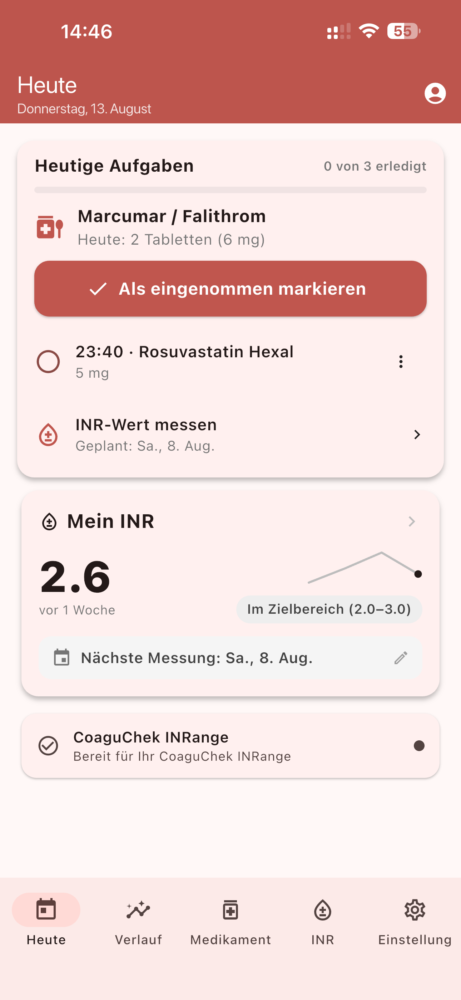

Erinnerungen, auf die Verlass ist
Medinote meldet sich zur eingestellten Zeit per Push-Benachrichtigung – und mit einem Tipp markieren Sie die Einnahme direkt als „Eingenommen“ oder „Nicht eingenommen“. So bleibt Ihr Einnahmeverlauf lückenlos.
Pilotphase in Deutschland – jetzt mittesten
Medinote begleitet Menschen unter Antikoagulations-Therapie – z. B. mit Marcumar, Falithrom oder Warfarin. Mit Wochenplan und zuverlässigen Erinnerungen behalten Sie Ihre Einnahmen im Griff, Ihre INR-Werte übernimmt die App auf Wunsch automatisch vom Messgerät – microINR® oder CoaguChek® INRange. Sie brauchen kein Konto: Ohne Anmeldung bleiben alle Daten auf Ihrem Telefon.

Entwickelt für den Alltag mit Gerinnungshemmern: übersichtlich, gut lesbar und einfach zu bedienen.
Medinote meldet sich zur eingestellten Zeit per Push-Benachrichtigung – und mit einem Tipp markieren Sie die Einnahme direkt als „Eingenommen“ oder „Nicht eingenommen“. So bleibt Ihr Einnahmeverlauf lückenlos.
Welche Tablette an welchem Tag? Der Wochenplan zeigt Ihre Dosierung für jeden Wochentag – klar und übersichtlich, genau wie auf dem Dosierungsplan Ihrer Ärztin oder Ihres Arztes.
Einmal per Bluetooth verbinden – fertig. Ihre Messwerte übertragen microINR® und CoaguChek® INRange automatisch in die App: ohne Abtippen, ohne Zahlendreher, ohne Aufwand.
Erfassen Sie Ihre INR-Werte und sehen Sie den Verlauf als Diagramm. Ihren persönlich festgelegten Referenzbereich können Sie daneben anzeigen.
Marcumar/Falithrom, Warfarin, Acenocoumarol und weitere Medikamente mit einem Tipp protokollieren – Ihr vollständiger Einnahmeverlauf, jederzeit griffbereit beim Arztbesuch.
Medinote funktioniert ganz ohne Konto: Ohne Registrierung werden alle Daten ausschließlich auf Ihrem Telefon gespeichert. Ein Konto erstellen Sie nur, wenn Sie es möchten.
Neu: Widgets für iPhone & Android
Die Medinote-Widgets zeigen auf dem iPhone-Sperrbildschirm oder dem Android-Startbildschirm, ob die heutige Einnahme noch offen ist oder schon dokumentiert wurde – dazu Ihren letzten INR-Wert und die nächste geplante Messung.
iPhone ab iOS 16. Die Widgets zeigen Ihren gespeicherten Plan – Ihre Erinnerungen erhalten Sie weiterhin als Benachrichtigung.
Klare Oberfläche, große Schrift, hoher Kontrast – gestaltet für den täglichen Gebrauch.


In drei Schritten zu einem verlässlichen Überblick über Ihre Therapie.
App öffnen und direkt starten, ganz ohne Registrierung. Antikoagulans auswählen, persönlichen INR-Referenzbereich festlegen und Wochenplan anlegen – fertig.
Einnahmen mit einem Tipp dokumentieren – die Erinnerung meldet sich von selbst. INR-Werte übernimmt die App automatisch per Bluetooth vom Messgerät (microINR® oder CoaguChek® INRange).
Trends verfolgen, den Verlauf beim Arztbesuch zeigen und Ihre Daten jederzeit als Datei exportieren. Ohne Konto bleibt dabei alles auf Ihrem Telefon.
Hinweis: Medinote ist ein Werkzeug zur Dokumentation und ersetzt keine ärztliche Beratung. Entscheidungen über Ihre Dosierung treffen Sie immer gemeinsam mit Ihrer Ärztin oder Ihrem Arzt.
Gesundheitsdaten sind besonders sensibel. Deshalb gilt bei Medinote: Ohne Konto bleibt alles auf Ihrem Telefon – ein Konto ist freiwillig. Entwickelt von Anfang an nach den Vorgaben der DSGVO.
Nutzen Sie Medinote sofort und ohne Registrierung. Ohne Konto werden Ihre Gesundheitsdaten – INR-Werte und Medikationseinträge – ausschließlich lokal auf Ihrem Telefon gespeichert.
Ein Konto ist optional. Wenn Sie eines erstellen, werden Ihre Daten verschlüsselt übertragen – und nur mit Ihrer ausdrücklichen Einwilligung verarbeitet (DSGVO Art. 6 und 9), jederzeit widerrufbar.
Sie können Ihre Daten jederzeit in der App exportieren und vollständig löschen – auf Wunsch samt Konto, ohne Rückfragen.
Medinote zeigt keine Werbung und verkauft keine Daten. Wir erheben nur, was für die Funktion der App notwendig ist.
Medinote befindet sich derzeit in der Pilotphase in Deutschland. Werden Sie Teil des Testprogramms und gestalten Sie die App mit Ihrem Feedback mit.
kontakt@medi-note.de